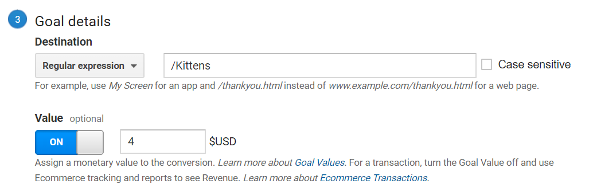
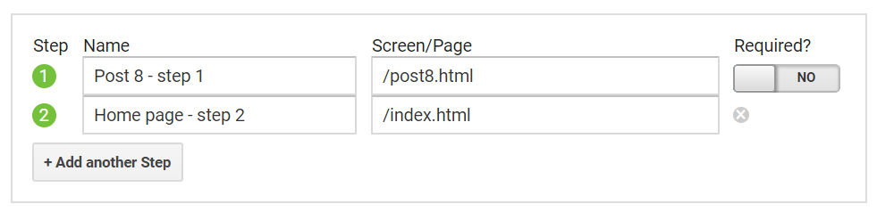
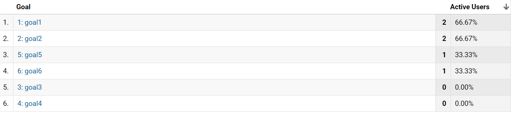
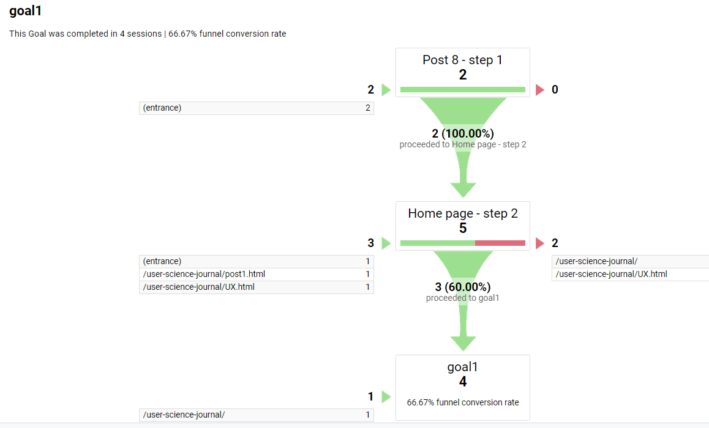

Goals and Events
For this project, I experimented with setting up goals and events in Google Analytics.
- What is the goal?
- What is the process for users to complete to achieve the goal?
- How were funnels set up for this goal?
Destination Goal
A destination goal is one type of goal available in Google Analytics that seems pretty easy to understand. With this goal, GA tracks if a certain page is viewed. I created a "Kittens" page and a "User Experience" page and added destination goals to these pages.
 Destination GoalFunnels
How users move through a website can be viewed on the GA dashboard under "Behavior. To hone in on certain data, a funnel can be set up to see how users are progressing towards a destination goal, and where users may be dropping off in the process.
I added one funnel from this post (post 8), to the index page, to track progress towards the final destination goal of the kittens page:
 Google Analytics FunnelA user could click on this link to go to the Index page, then click on the Kittens button and this goal should be met.
Event Goals
Events are the ways users interact with a website and can be viewed on the GA dashboard under "Behavior". Google Analytics also lets events be set up as goals.
I added some photos to the Kittens page, made them clickable, and added event goals with each photo.
I added a video to the User Experience page and tried to add an event goal to track if the video was played.
Results
The GA Conversions report showed some results after I clicked around. Goal 1 is viewing the Kittens page, Goal 6 is viewing the UX page. (I see that I should rename these goals...):
 Conversions ReportThe "Funnel Visualization" report for Goal 1 shows how I was moving around the website. When I used the path I set up for this goal, this registered as the goal being met.
 Funnel Visualization Report for Goal 1Conclusion
Goals and funnels seem like a valuable way to find out if users are navigating a site in the way a developer intends, and to pinpoint where issues are occuring. For sites where the goal is to share information, being able to see that your efforts to point users to a certain page are successful seems particularly helpful.
It seems important to be thoughtful about setting up goals, and to spend time determining what data is really going to be beneficial to collect.